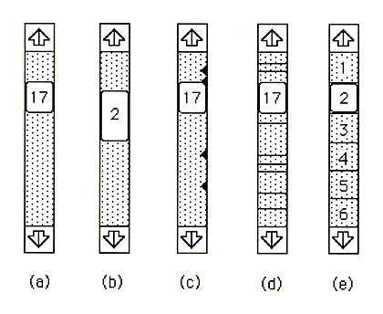
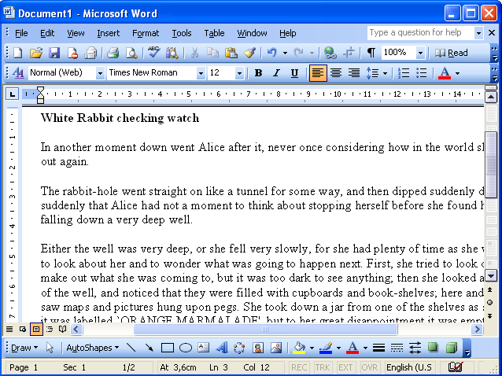
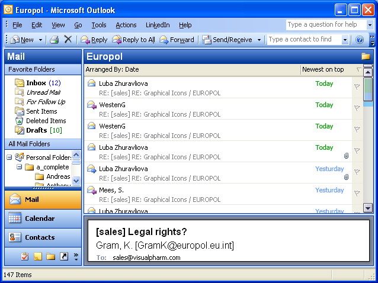
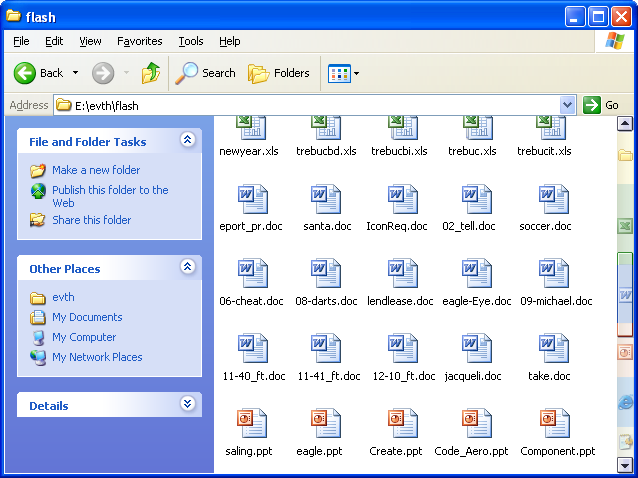
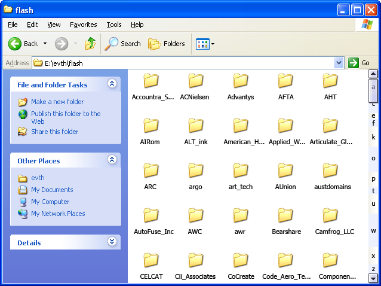
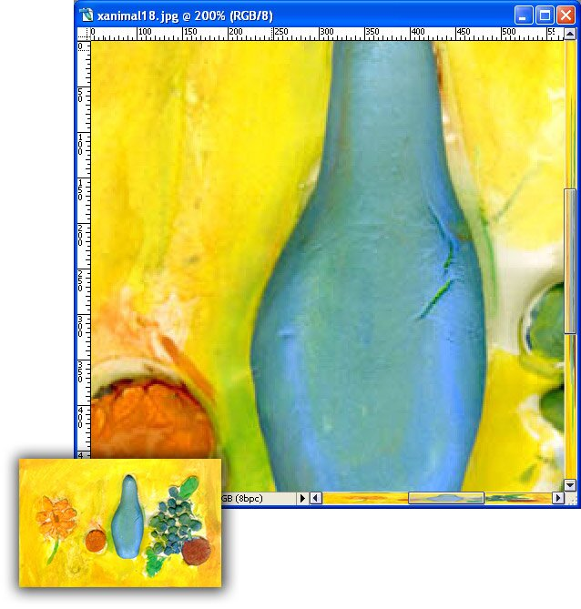

How do you make a scrollbar more useful? Draw the document on it.
The scrollbar is part of most applications today. This interface control has been in use for a very long time, yet in our view its function and ergonomic value have not been fully used and could be much improved by a few additions.
A scrollbar has two functions. One is direct: the user moves through the document with it. The other is navigational: from the look of the scrollbar the user can tell where in the document they are. Mice with a scroll wheel have greatly weakened the first function: in most cases it is easier and faster to move through a document with the wheel. So scrollbars have lost some of their value, though not so much that we can do without them. In this situation, not trying to get the most out of the scrollbar seems to us an unjustified waste.
There have, of course, been attempts to improve the scrollbar by strengthening its navigational function. But most of these proposals have remained unrealised theory. For example, Ben Shneiderman in his book Designing the User Interface proposes several modifications of the standard scrollbar to get more out of it:

Unfortunately, none of Shneiderman’s proposals except the proportional thumb has made it into today’s applications. And this despite developers’ obvious wish to give users tools that, in essence, solve the same tasks as a scrollbar with added functions would.
The space of the scrollbar can be used not only to show the size of the document, as usual, but also to show its content in symbolic form. Of course, a scrollbar is small, so the picture cannot be detailed. Still, there is enough room to tell parts of the document apart, for example its pages, and to jump to the one you need quickly and directly.
Besides, it is best to adapt the scrollbar to the type of application it is used in. In different contexts this improved control can solve a number of extra tasks the user needs.
Here are examples of what an effectively used scrollbar can do in some typical contexts.
1. Text editors

Extra functions of the scrollbar in a text editor make it easier to work with the structure of the document, faster and with less effort. Page previews on the scrollbar let the user:
- jump straight to the nearest page with a picture or a table, or with a different orientation from the other pages;
- glance at what is on a page without going to it and losing time;
- see where the cursor is at the moment;
- see at once how many corrections there are on each page.
2. Long web forms
In long web forms, page previews on the scrollbar also help the user.
- First, marks on the scrollbar show exactly where a mistake was made in filling in the form. Instead of checking a lot of information to find the error, the user can jump to the right field and fix it.
- Second, the user can quickly find the page they need, see a preview of the whole page and get an idea of it. Because the preview shows the page layout, it is clear at once where the header, footer, subheadings, pictures and so on are.
3. Search
The scrollbar can show where the words found occur in the text. This helps with large amounts of information. Instead of leafing through many pages of text, the user sees the results of the query at once and can quickly find what they are looking for.
4. Mail programs

Extra scrollbar functions in mail programs bring a good deal of practical benefit and widen what the program offers its users. For example:
- In a message, the scrollbar can show the parts written by each correspondent.
- In the list of messages, the scrollbar can show dates. It helps to show time with colour: from hot red for fresh mail to cold blue for messages that came long ago and have been dealt with.
5. File managers


In file folders, the scrollbar can show how the files are sorted and so help find the one you need quickly. This is all the more useful because Windows Explorer can already sort files by several attributes. Combined with an extended scrollbar, this lets you see a set of files in several cross-sections at once.
Files can be sorted:
- by name, with letters placed on the scrollbar;
- by type. For example, if the list shows folders first and then files, part of the scrollbar is yellow and the next part grey. To show image files, one could place the Windows Picture and Fax Viewer icon or use a colour, say blue-green; Word files could be light blue, and so on;
- by date created, for example with colour, as in mail programs;
- by size, with different colours for different file sizes.
6. Media players
For the user’s convenience, Windows Media Player could mark individual chapters on the scrollbar when playing a DVD. The information is on the disc anyway.
7. Images

For images, for example in a popular program such as Photoshop, the scrollbar can show a scaled-down outline of the picture that gives an overall impression of it. This helps when you have to zoom far in while working and horizontal and vertical scrollbars appear.
For example, if the picture is a country landscape, the vertical scrollbar shows where the sky ends and the ground begins, and the horizontal one shows where the house is. If the file is a page of a booklet, you can see where the text is and where the pictures are.
These are just a few examples of extending what the scrollbar can do, and there is plenty of room for more. Skilful use of extra scrollbar functions can become the highlight of your software product, will certainly improve the quality of the interface and will win users’ sympathy. It is all in your hands!